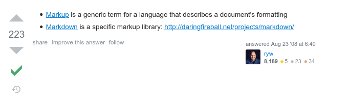

Daskom 1337
Membuat situs pribadi dengan Github
- By FAI -
- By FAI -
Code fun fact
>>> def daskom1337():
... return 'ini adalah fungsi'
...
>>> d = daskom1337
>>> [d()]
['ini adalah fungsi']
Kita bisa membuat sebuah variable menjadi fungsi dan memanggilnya tanpa memanggil fungsi nya langsung
Apa itu github ?
Github adalah sebuah persatuan dari dua kata yaitu git dan hub
Lalu apa itu git ?
Git merupakan salah satu jenis dari VCS (Version Control System)
Ada beberapa jenis VCS dan yang paling terkenal adalah = Git, SVN, dan Mercurial
Ada beberapa jenis VCS dan yang paling terkenal adalah = Git, SVN, dan Mercurial
kenapa Version Control System ?
- laporan.docx
- laporan_fix.docx
- laporan_fix_banget.docx
- laporan_bismillahfix.docx
- laporankelarkelarkelarkelar.docx
- laporanISdcwureSNDKAOsrejcwmrsdhIs.docx
Jadi, Github adalah sebuah platform yang bisa mengumpulkan repository git yang disatukan dalam sebuah server remote / cloud
kenapa Github ?
kenapa Github ?
- Backed by Microsoft,
- Banyak dari fitur nya yang free,
- Banyak project open source yang bisa kita ikut berkontribusi (sebagai portfolio)
Kenapa lebih baik harus bisa git dan memiliki akun github ?
- File manajemen yang lebih baik
- Semua pekerjaan yang berhubungan dengan kodingan pasti butuh
- Portfolio untuk melamar pekerjaan
- Skill dasar abad 21 xD
Github personal web setup
- Membuat repository baru dengan nama "username.github.io"
- Set repository sebagai public
- Membuat index.html pada repository tersebut
- Selesai...
HTML (Hypertext Markup Language)
Markup vs Markdown

Tebal Garis Bawah Miring
Tebal Garis Bawah Miring
CSS (Cascading Style Sheet)
Tebal dan Miring
Tebal dan Miring
T H A N K S